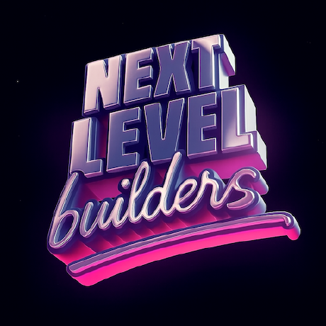
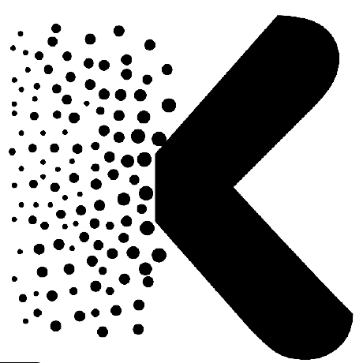
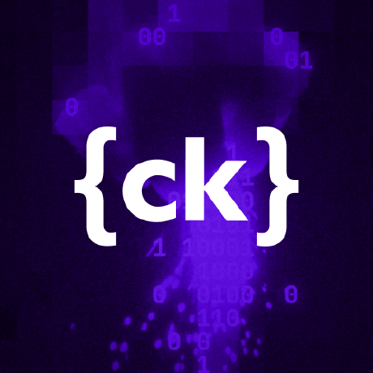
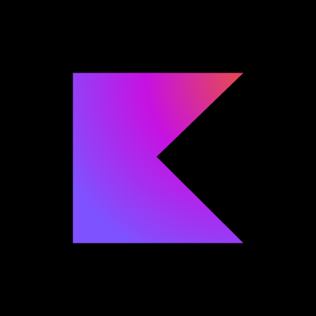

Superpowers
OtherA full development methodology for coding agents, built from composable skills.
npx skills add obra/superpowersInstallable instructions that teach your agent a workflow: design taste, frontend patterns, SEO, infrastructure, and more. Ranked by GitHub stars (checked Oct 2026).
Skim before you install: a skill is instructions your agent follows. Read it first, the same way you would review a script.
Showing 20 of 20 skills
A full development methodology for coding agents, built from composable skills.
npx skills add obra/superpowersPractical engineering skills pulled straight from a working agent configuration.
npx skills add mattpocock/skillsAnthropic's official skills for documents, spreadsheets, presentations, and PDFs.
npx skills add anthropics/skills
Design intelligence that helps an agent produce polished, professional interfaces across platforms.
git clone https://github.com/nextlevelbuilder/ui-ux-pro-max-skill.gitProduction engineering workflows and quality gates, packaged as agent skills.
npx skills add addyosmani/agent-skills
A large library of validated skills that turn an agent into a working research scientist.
npx skills add K-Dense-AI/scientific-agent-skillsVercel's official skill collection for building, optimizing, and shipping web projects on Vercel.
npx skills add vercel-labs/agent-skillsSEO and GEO skills plus an MCP server that reads real Search Console, Analytics, and ads data.
claude plugin marketplace add Ryze-AI-Adgent/open-seo-mcp-skills && claude plugin install open-seo-mcp-skills@ryzeSkills that help an agent work with Supabase databases, auth, and edge functions correctly.
npx skills add supabase/agent-skillsProduction web scraping and automation skills for agents that need data from the web.
npx skills add apify/agent-skillsTurns an agent into a senior design architect with tokens, components, accessibility checks, and design-system guidance.
npx ux-ui-agent-skills initTeaches an agent to build WordPress blocks, themes, and plugins the right way.
npx skills add WordPress/agent-skills
React Native know-how drawn from production apps, packaged for coding agents.
npx skills add callstackincubator/agent-skillsSkills for building and operating on AWS with an agent.
npx skills add itsmostafa/aws-agent-skillsA large knowledge base of infrastructure, security, and compliance skills for agents.
npx skills add bagelhole/DevOps-Security-Agent-SkillsShared workflows for agents working on OpenClaw projects, so common tasks are written once and reused.
npx skills add openclaw/agent-skills
Agent skills for writing and working with Kotlin projects.
npx skills add Kotlin/kotlin-agent-skillsA code-driven framework for generating slide decks the way software gets built.
npx skills add sunbigfly/ppt-agent-skillsTerraform and Packer skills for infrastructure-as-code work.
npx skills add hashicorp/agent-skillsOfficial skills for driving Oxylabs proxies and scraping APIs from an agent.
npx skills add oxylabs/agent-skillsTry a different search or category.